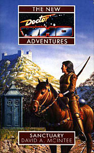

|
Sanctuary
|
BASIC PLOT DOCTOR COMPANIONS MATERIALISATION CIRCUIT Pg 230 The TARDIS proper replaces the Jade Pagoda in exactly the same place, just about a week later. Pg 294 The TARDIS rematerializes again in the same place, a few hours after it had left. PREPARATORY READING CONTINUITY REFERENCES The Cloister Bell is ringing, a device first named as such in Logopolis. It's possible that it actually rang as far back as The Edge of Destruction, but the Doctor didn't know what it was called then. Pg 16 "Shades! What the smeg was that?" Smeg is a 'swear'-word taken from Red Dwarf. Its appearance here is unfortunate. "We've left Gadrell Major all right." The location for some of the events of Infinite Requiem. Pg 17 "Ahead was a wood-panelled corridor, while a normal, clinically white corridor was to the right. He turned down a brick-lined corridor to the left." The wooden section of the TARDIS is presumably fairly near the secondary console room, first seen in The Masque of Mandragora, while we saw the bricked, warehouse-like sections of the TARDIS in The Invasion of Time. Pg 18 Continuity overload: "With the Monk and Artemis long gone, I don't know. That's what worries me... A Guardian could, or possibly the Old Ones; parts of their conscious minds ride the Time Winds through the vortex, and they certainly won't be too happy with our interfering in Haiti and on Ry'leh." The NA Alternate Universe Arc (Blood Heat to No Future); the Guardians from The Ribos Operation, The Armageddon factor et al; the Old Ones pop up all over the place, but the references here are to White Darkness and All-Consuming Fire. Mention of the Master, last seen in First Frontier. Pg 19 "As usual when travelling near the heart of the TARDIS, she gained the distinct impression of moving downwards, deeper into the workings of the ship." This is consistent with comments made in the novelisation of Castrovalva. "'Is it just my imagination,' she asked, 'or is the TARDIS bigger than it used to be?' 'Yes and no. This is a different TARDIS to the one you first boarded, remember. I had occasion to jettison some of that ship's mass a couple of lifetimes ago, but obviously that never happened to this TARDIS, so its still entirely complete.'" It's a different TARDIS, because it got switched to an alternate universe one in Blood Heat, and the jettisoning happened in Logopolis (Romana's room), Castrovalva (25 percent of the ship's mass including the Zero Room) and some time before Paradise Towers (the then-leaky swimming pool). "Instead she memorized the route to those interesting new locations as the Doctor turned right and walked into a fair-sized art gallery." The TARDIS art gallery, filled with paintings 'liberated' from time and space before they could be destroyed, is a main feature of the audio Dust Breeding. "She stopped at a framed WANTED poster of a vaguely familiar subject; a dignified-looking white-haired man in an Edwardian frock coat. The name at the bottom of the poster was Doc Holliday." The Gunfighters, although we never see this on-screen (maybe the Doctor found it somewhere years later, and bought it out of amusement). I'm not sure when Benny would have seen an image of the first Doctor. "The Doctor, meanwhile, had draped his hat and umbrella over a Veltrochni tree sculpture." The Veltrochni, a race created by McIntee, have appeared in The Dark Path and Mission: Impractical. Pg 23 "This TARDIS also has a Jade Pagoda; we can get away in that." This unstable escape capsule first appeared in Iceberg. Pg 26 "Benny had been waiting only a few moments when the Doctor joined her outside the richly textured antique door, which was inscribed with the symbol of a fist and some Chinese script; the markings, however, were too indistinct for Benny to read under the dim and dense-seeming light at the heart of the TARDIS." This is consistent with the description of the exterior of the Jade Pagoda from Iceberg. Pg 27 "'How about going for Callahan's, then?' [...] 'Not after what happened last time.'" The adventure at Callahan's, a micro-brewery and pub in San Diego, remains, sadly, an unrecorded tale. "'Come to think of it, you've never been to my restaurant either, have you?' 'Your restaurant?' 'Yes, a little place called Tempus Fugit. Convivial sort of place, if I remember correctly.'" The Crystal Bucephalus. Pg 34 Another reference to Gadrell major from Infinite Requiem. I want the rules of the card game they're playing: "'Gotcha.' 'I'm afraid not - those two jacks make a sralk; you're bust I'm afraid.' 'But you said that on a Tuesday -'" (Not to mention the sheer wonderful ludicrousness of playing a game that relies on what day of the week it is while travelling in a time machine.) "I mean, is there any chance we can pay Ace a visit and see how she's getting on with her liaisons dangereuses?" Ace opted to remain behind in eighteenth-century Paris a couple of books back, in Set Piece. Pg 61 The Doctor injects Benny with "Broad spectrum antibiotics, a few immunizations, that sort of thing" in an effort to stop her contracting the plague. It is sometimes implied that the Doctor fills his companions up with nanites which stop them getting ill, help them heal etc., which may have the effect of making them infertile, as postulated in Deceit (the Time Lords have done something similar to Chris by Dead Romance). That said, Set Piece implies that Ace may well be her own great-great-grandmother, and Benny gives birth to Peter years later, so I'll give him the benefit of the doubt here, and assume that he's doing exactly what he says he's doing. Pgs 62-63 "I've had to fend for myself in lots of places: from the glaciers of polar Mars to the jungles of Veltroch, from the plains of Leng to the fire sands of Canopus III." Transit; Mission: Impractical; All-Consuming Fire; and, while the trip to Canopus III remains unrecorded, Benny will eventually go to Canopus IV in Ghost Devices. Pg 63 Brief reference to the Doctor meeting Napoleon, an occasion which, despite the latter's appearances in both The Reign of Terror and The Sands of Time, we have yet to see. The third Doctor mentioned this meeting in Day of the Daleks. Pg 69 "Are you sure this is Earth? It looks more like Nekros to me." Revelation of the Daleks (but see Continuity Cock-Ups). Pg 71 "'If someone abandons their home, it's usually for a very good reason.' She frowned, recalling exactly what such a reason felt like." Benny had to leave her home on Beta Caprisis when the Daleks invaded, as we found out in Love and War and witnessed, kind of, in Parasite. That said, a bit of a mess is made of that point during this tale. (See Continuity Cock-Ups) Pg 73 Another reference to the recently-departed Ace. Pg 74 "No, I couldn't, and don't think I can't understand Ancient Tzun when I hear it." The Tzun, like the Veltrochni, are another alien race created by McIntee, and appear in Lords of the Storm, First Frontier, Mission: Impractical and (it's assumed but never specified) Bullet Time. Pg 80 "And don't call me Lady; the last time someone did that I nearly became a vampire's lunch." Blood Harvest. Pg 84 "And announce to Master de Citeaux that Jean Forgeron de Gallifrey is here as a Royal observer from the court of Alexander." This is a French translation of the Doctor's standard nom-de-plume of John Smith, as from The Wheel in Space and onwards. It's possible that the Doctor visited the court of Alexander in Campaign. Pg 86 "He chewed on his lower lip as he searched through various pockets, and even looked inside the crown of his hat, turning up all manner of wallets, pieces of bizarrely tiny mechanisms and other oddities." This reminds me of practically all the worst moments of Battlefield, with the exception of Shou Yuing. Pg 88 Bernice's diary, a staple of all the NAs and beyond, makes an appearance. Pg 92 "She was a little too out of breath for further banter, and in any case she was getting quite a pain in the right side of her chest from the cold air she was gulping in as it hit the damaged tissues left over from a punctured lung she'd picked up a year or two back." In Blood Heat. Pg 93 It is stated that Benny is 33 at this point. Generally accepted wisdom nowadays suggests that she spent four years as the Doctor's companion and she was 30 when she joined him. Presumably these four years take us to Happy Endings. There's yet another mention of Ace. Pg 94 "I was at Fitzwilliam Castle on the eve of the signing of the Magna Carta." The King's Demons. There is further reference to Sir Gilles Estram, and conclusive proof that there really was such a man, whose identity the Master assumed, rather than him being a creation of the Master's from the word go. Unfortunately, it also suggests, coupled with the events of The Keeper of Traken that, presumably according to some strange law of the Universe, the Master can only take over the identities of those whose names anagram out to the word 'Master'. The Reverend Retsam, of Norfolk parish, must be quaking in his boots. Pgs 94-95 "'No, I'm just sprightly for my age.' The Doctor gave him a disarming smile. 'Of course even that event wasn't as lavish as those given by Coeur de Lion in Jaffa. I found those much more cheery - and they did have the advantage of the presence of his sister, Joanna.'" The Crusade. The reference to the Doctor being sprightly for his age is to a moment in The Green Death when he describes himself as 'quite spry for my age'. Pg 99 "Pausing to let the river flow past her, she fell into step behind the mercenary's horse, and looked back at him curiously, her attention drawn to the anachronistic silver sword that was strapped to his back." Guy has a steel sword, completely out of context for the age in which this is set. Benny speculates that this may have been the Doctor's work, and who are we to gainsay this? Charmingly, it's never made clear, Guy claiming it was the work of Wayland the Smith, but also pointing out that any number of smiths called themselves Wayland in honour of the semi-mythological original. It also has a resonance to Excalibur of Battlefield fame (not to mention Arthurian legend) which also appeared to be made of a more modern metal than should have been possible. Pg 111 Another Ace reference. Pg 122 "Deep in the churning void of smoke and burning embers amidst the crater, shapes moved: dully glinting, dome-topped shapes, spitting harsh blue lightning to the accompaniment of that familiar sound. Her blood ran cold, but she focused her mind all the same. 'It didn't happen this way,' she protested in a whisper. 'They never landed...'" Benny's memories of the Dalek attack on Beta Caprisis as mentioned in Love and War are corrupted within her dream. (And, again, see Continuity Cock-Ups) Pg 142 "'Something's bothering you, Guy; a blind man could read your body language right now.' 'Body language?' 'Yes, you know. You're a fighter, you can tell by someone's stance whether he's afraid, bold - whatever.' 'Of course.' That was just instinct, he thought, not a language. If it were, people would use it to lie. Then again, wasn't that what a feint was?" Bernice's capacity for reading body language is well-documented, right back to Love and War. Guy's thought processes are rather nicely written though. Pg 142-143 "'I mean that there are things which I think I should not want to do, but I do.' 'Like help out here, you mean? Get involved in yet more trouble when you just want to put it all behind you and live in peace; but you can't, because some idealistic part of you tells you it would be wrong?'" It's interesting to note that Guy is clearly equated here with the Doctor; Benny is falling in love with a Doctor-analogue. Pg 156 "'I think the saying you're looking for,' the Doctor interrupted, is "battle not with monsters, lest a monster you become," as someone once said.'" It was Nietzsche, as quoted first in the NAs in The Left-Handed Hummingbird, and arguably the driving moral behind most of the books in this series. Pg 160 "Last time she had visited her own time - a couple of years later than she had left it, though - she discovered that the condition had been unofficially christened 'Ace's Kiss of Death' by Spacefleet veterans. Sometimes - any time she thought of it, in fact - she wished she couldn't think why." Another mention of Ace. Ouch! Pg 166 Yet another mention of Ace. Pg 167 "'There's many a slip twixt the cup and the superglue,' the Doctor warned." A malapropism of the Doctor's more typically associated with Time and the Rani. Pg 169 "Don't you count your Chelonians before they're hatched." Chelonians first appeared in The Highest Science. Pg 174 "He poked a finger through the hole in the exceedingly odd hat that he wore." The Doctor's white fedora was first introduced in White Darkness by David McIntee. It seems only fitting, then, that he gets to be the one that kills it off. Pg 178 "Anyway, look who's talking - you're the one who used to run a speakeasy in old Chicago." Blood Harvest. Pg 193 "It's at times like this I wish I'd taken that job as President of Gallifrey." He was offered it in Blood Harvest. Pg 197 "'He is very much like the owl, I think,' Guy said, half to himself. 'Wise, you mean?' Benny had heard several people comment on such a likeness. Perhaps it was his eyebrows and keen gaze. 'What has wisdom to do with owls? He is comfortable in the darkness, as they are, and I think he is equally as adept at hunting down prey in cold blood.'" This is a wonderful riff on Paul Cornell's constant use of the owl metaphor from Timewyrm: Revelation onwards. It's great that Guy sees through it so blatantly. Pg 203 "If it wasn't contrary to the terms of the Armageddon Convention, I'd suggest you'll probably get luckier playing the spoons at him until he can't take anymore." The bombs used by the Cybermen in Revenge of the Cybermen were against the Armageddon Convention, an event which we saw in The Empire of Glass. The Doctor played the spoons in Time and the Rani, amongst other occasions. Pg 209 "And I'm Davros' beautician." Genesis of the Daleks et al. Pg 209 "His gaze flicked briefly down to the Aztec brooch on his lapel, the eagle and serpent carved into it mirroring the conflicting opinions that she fancied she could discern in his eyes." This is the brooch the Doctor took in The Aztecs, which he started wearing in White Darkness. Pg 215 "Vandor Prime, where she'd spent the early years of her life, had had two G-class suns, and no snow." Vandor Prime was the location for Mission: Impractical, but not, so far as we know, where Benny grew up. Weird. See Continuity Cock-ups. Pg 216 "Then she'd still been fleeing the sting of betrayal when she'd found out the truth about Kyle." Mentioned in Love and War, only there it happened to Simon, not Kyle. See Continuity Cock-Ups, of course. Pg 222 "Well I hope you get them in the right order" The Horns of Nimon. Pg 250 "Two: no matter what happens, we have to prevent it from falling into de Citeaux and Guzman's grubby little protruberances." An almost direct quote from Remembrance of the Daleks. Pg 255 "The Doctor held up the small book he had found under the Castellan's bed, it appearing from nowhere as if it were a card in a conjuring trick." Just like Revelation of the Daleks. Pg 263 "Then again, Ace had been a product of a less-developed era. Benny had wondered on occasion what it would take to drive her to be like Ace. Standing there in the dank passageway into which Jeanne's cell-door was set, her fingers tracing a pattern of the chill flat of the blade of one of Guy's basiliards, she wished - would have given her soul, in fact - that she had never found out." The last reference to Ace, but one which really does make sense in the context of her having left so recently. Pg 267 "The Doctor shifted slightly, like a hermaphroditic Centauran at the patriarchal Draconian court, unsure whether speaking out was a good idea or not." There should probably be a prize for the weirdest simile in a Doctor Who book. For the record, (Alpha) Centaurans are from The Curse of Peladon, The Monster of Peladon and Legacy; Draconians are from Frontier in Space and numerous books. Pg 271 Another Veltrochni reference. Pg 279 "It reminded Benny of the villain in an old 2-D movie she'd seen while the Doctor had once left her stuck in Oxford." On of the Star Wars trilogy presumably, and this undoubtedly happened off-screen in The Dimension Riders. Pg 286 "'We will not be safe in that wooden box: they will simply pile wood around and burn us together.' 'That's been tried,' the Doctor muttered in a scornful tone." In The Witch Hunters, albeit that that book was written later, and the Doctor was much more worried about it when it happened on that occasion. Pg 295 Another reference to the factually incorrect Vandor Prime and Kyle. Pg 296 "She wished Ace was still here - she would have understood." All right, there is another reference to Ace, but it's worthwhile as the plot and the love story come to an end. Just wait until GodEngine, when the sheer number of references to Benny's departure start to overwhelm the rest of the text. "How about Blackpool - I meant to go there once before, but never quite got there." The final line, although not quite, of Revelation of the Daleks. The publication of The Nightmare Fair implies that the Doctor did, actually, get there, so maybe he's lying at this point, in an effort to cheer Benny up. OLD FRIENDS AND OLD ENEMIES NEW FRIENDS AND NEW ENEMIES That said, it is deliberately left unclear as to whether or not Guy de Carnac survives, although the implication is that he does not. McIntee was apparently at one point commissioned to write more stories about this character, but we cannot infer his survival as it remains unclear whether they were to be set before or after the events of this novel. These books (I believe there were to be three) have, to the best of my knowledge, yet to be either written or published.
CONTINUITY COCK-UPS PLUGGING THE HOLES [Fan-wank theorizing of how to fix continuity cock-ups] FEATURED ALIEN RACES FEATURED LOCATIONS IN SUMMARY - Anthony Wilson |
|
 |